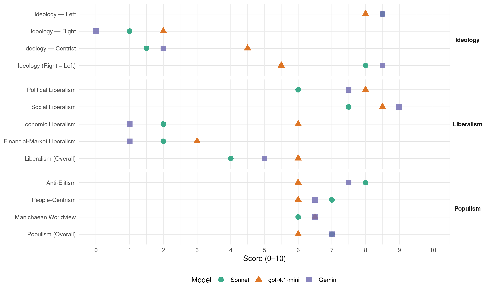

PDS (Germany, 1998)
manifesto_id 41221_199809
Get full text: This site shows derived annotations and short verbatim quotes only. The full manifesto text is © Manifesto Project / WZB — obtain it via manifesto-project.wzb.eu using the manifesto_id above.
Headline scores
| Dimension | Sonnet | gpt-4.1-mini | Gemini |
|---|---|---|---|
| Populism (Overall) | 7.0 | 6.0 | 7.0 |
| Anti-Elitism | 8.0 | 6.0 | 7.5 |
| People-Centrism | 7.0 | 6.0 | 6.5 |
| Manichaean Worldview | 6.0 | 6.5 | 6.5 |
| Ideology (Right − Left) | 8.0 | 5.5 | 8.5 |
| Liberalism (Overall) | 4.0 | 6.0 | 5.0 |
| Political Liberalism | 6.0 | 8.0 | 7.5 |
| Social Liberalism | 7.5 | 8.5 | 9.0 |
| Economic Liberalism | 2.0 | 6.0 | 1.0 |
| Financial-Market Liberalism | 2.0 | 3.0 | 1.0 |
Evidence per dimension
Economic Liberalism
Gemini · score 1.0 · verified · chunk 1
“Stärkung öffentlichen, kommunalen und genossenschaftlichen Eigentums”
Marktradikalismus nicht nur verweigern, sondern für die Stärkung öffentlichen, kommunalen und genossenschaftlichen Eigentums eintreten An die Stelle der
Gemini · score 1.0 · verified · chunk 2
“offenen Marktwirtschaft mit freiem Wettbewerb” zugunsten”
Die PDS setzt sich dafür ein, den Vertragsgrundsatz “einer offenen Marktwirtschaft mit freiem Wettbewerb” zugunsten eines sozialen Gemeinschaftsauftrages
gpt-4.1-mini · score 4.0 · mixed · chunk 1
“Die PDS setzt der konservativen Politik parlamentarisch und außerparlamentarisch Widerstand entgegen und engagiert sich für Alternativen”
…Die PDS setzt der konservativen Politik parlamentarisch und außerparlamentarisch Widerstand entgegen und engagiert sich für Alternativen Die PDS ist die sozialistische Partei der Bundesrepublik Sie nimmt in den sozialen und politischen Auseinandersetzungen radikaldemokratische und antikapitalistische Positionen ein …
gpt-4.1-mini · score 6.0 · verified · chunk 2
“soziale und ökologische Mindeststandards”
Wir treten für die bisher weitgehend versäumte Realisierung der 1992 in Rio beschlossenen Agenda 21 in der Bundesrepublik und für eine solidarische Weltwirtschaftsordnung ein Wir fordern die internationale und europäische Vereinbarung von sozialen und ökologischen Mindeststandards
Sonnet · score 1.0 · verified · chunk 1
“Privatisierung und Deregulierung”
die Regierenden setzen weiter auf Privatisierung und Deregulierung, auf das entfesselte Wirken des Marktes, wo soziale Kälte und ökologische Blindheit herrschen
Sonnet · score 3.0 · verified · chunk 2
“Kommerzialisierung des Bildungswesens lehnen wir ab”
Das Recht auf Bildung schließt die Pflicht des Staates zur bedarfsgerechten, stabilen und dauerhaften Finanzierung ein Die Kommerzialisierung des Bildungswesens lehnen wir ab
Financial-Market Liberalism
Gemini · score 1.0 · verified · chunk 1
“Einfluß der Banken auf Unternehmen und öffentliche Einrichtungen verringert”
uns dafür einsetzen, daß der Einfluß der Banken auf Unternehmen und öffentliche Einrichtungen verringert, der Einfluß demokratischer Institutionen auf
Gemini · score 1.0 · verified · chunk 2
“Besteuerung der internationalen Devisen- und Aktienumsätze”
Um die gefährliche Entfesselung spekulativer Weltfinanz- und Aktienmärkte zu stoppen, unterstützen wir die Forderung nach der Besteuerung der internationalen Devisen- und Aktienumsätze (Tobin-Steuer)
gpt-4.1-mini · score 3.0 · verified · chunk 1
“Wir werden uns dafür einsetzen, daß der Einfluß der Banken auf Unternehmen und öffentliche Einrichtungen verringert, der Einfluß demokratischer Institutionen auf die Banken wesentlich gestärkt wird”
…Ohne Illusionen über die gegenwärtige Realisierbarkeit werden wir uns dafür einsetzen, daß der Einfluß der Banken auf Unternehmen und öffentliche Einrichtungen verringert, der Einfluß demokratischer Institutionen auf die Banken wesentlich gestärkt wird Die Europäische Union muß sozial, demokratisch, beschäftigungsorientiert, ökologisch, friedensstiftend und weltoffen werden …
gpt-4.1-mini · score 3.0 · verified · chunk 2
“Besteuerung der internationalen Devisen- und Aktienumsätze (Tobin-Steuer)”
Um die gefährliche Entfesselung spekulativer Weltfinanz- und Aktienmärkte zu stoppen, unterstützen wir die Forderung nach der Besteuerung der internationalen Devisen- und Aktienumsätze (Tobin-Steuer) Die zur Verfügung stehenden Mittel aus einer solchen Steuer sollten primär über die UNO für internationale Entwicklungsprojekte eingesetzt werden
Sonnet · score 2.0 · verified · chunk 1
“Einfluß der Banken auf Unternehmen”
werden wir uns dafür einsetzen, daß der Einfluß der Banken auf Unternehmen und öffentliche Einrichtungen verringert, der Einfluß demokratischer Institutionen auf die Banken wesentlich gestärkt wird
Sonnet · score 2.0 · verified · chunk 2
“Besteuerung der internationalen Devisen- und Aktienumsätze”
unterstützen wir die Forderung nach der Besteuerung der internationalen Devisen- und Aktienumsätze (Tobin-Steuer)
Political Liberalism
Gemini · score 7.0 · verified · chunk 1
“Ausbau plebiszitärer Demokratie, kommunaler Selbstverwaltung”
moderne Demokratieentwicklung und andere Mitbestimmungsmöglichkeiten der Bürgerinnen und Bürger, insbesondere den Ausbau plebiszitärer Demokratie, kommunaler Selbstverwaltung, Partizipations- und Informationsrechte
Gemini · score 8.0 · verified · chunk 2
“Demokratisierung aller Politikbereiche in der EU”
Dies erfordert zuerst eine Demokratisierung aller Politikbereiche in der EU, eine Demokratisierung der Institutionen und Strukturen
gpt-4.1-mini · score 8.0 · verified · chunk 1
“Die PDS tritt für die umfassende Realisierung der politischen und sozialen Menschenrechte ein”
…Die PDS tritt für die umfassende Realisierung der politischen und sozialen Menschenrechte ein Alle Menschen sollen sich an der Gestaltung ihrer Lebensbedingungen selbstbewußt beteiligen, soziale und solidarische Verantwortung übernehmen können Die PDS will eine neue Demokratisierung der Gesellschaft …
gpt-4.1-mini · score 8.0 · verified · chunk 2
“Demokratisierung der Europäischen Union, transparente und demokratische Entscheidungsprozesse”
Die Entwicklung in Europa erfordert eine grundlegende Demokratisierung der Europäischen Union, transparente und demokratische Entscheidungsprozesse in Politik und Wirtschaft und die aktive Mitgestaltung der Bürgerinnen und Bürger
Sonnet · score 6.0 · verified · chunk 1
“plebiszitäre Demokratie”
Wir wollen die Stärke der PDS in Ostdeutschland nutzen, um für moderne Demokratieentwicklung und andere Mitbestimmungsmöglichkeiten der Bürgerinnen und Bürger, insbesondere den Ausbau plebiszitärer Demokratie
Sonnet · score 6.0 · verified · chunk 2
“grundlegende Demokratisierung der Europäischen Union”
Die Entwicklung in Europa erfordert eine grundlegende Demokratisierung der Europäischen Union, transparente und demokratische Entscheidungsprozesse in Politik und Wirtschaft
Liberalism (Overall)
Gemini · score 5.0 · verified · chunk 1
“gleiche Rechte für alle Menschen”
offene Hochschulen und das Verfassungsrecht auf Ausbildung - Wir wollen gleiche Rechte für alle Menschen, die in der Bundesrepublik leben
Gemini · score 5.0 · verified · chunk 2
“Demokratisierung aller Politikbereiche in der EU”
Dies erfordert zuerst eine Demokratisierung aller Politikbereiche in der EU, eine Demokratisierung der Institutionen und Strukturen
gpt-4.1-mini · score 6.0 · verified · chunk 1
“Die PDS tritt für die umfassende Realisierung der politischen und sozialen Menschenrechte ein”
…Die PDS tritt für die umfassende Realisierung der politischen und sozialen Menschenrechte ein Alle Menschen sollen sich an der Gestaltung ihrer Lebensbedingungen selbstbewußt beteiligen, soziale und solidarische Verantwortung übernehmen können Die PDS will eine neue Demokratisierung der Gesellschaft …
gpt-4.1-mini · score 6.0 · verified · chunk 2
“Demokratisierung der Europäischen Union, transparente und demokratische Entscheidungsprozesse”
Die Entwicklung in Europa erfordert eine grundlegende Demokratisierung der Europäischen Union, transparente und demokratische Entscheidungsprozesse in Politik und Wirtschaft und die aktive Mitgestaltung der Bürgerinnen und Bürger
Sonnet · score 4.0 · verified · chunk 1
“Demokratisierung der Gesellschaft”
Die PDS will eine neue Demokratisierung der Gesellschaft: Erstens durch die wesentlich erweiterte Partizipation der Bürgerinnen und Bürger
Sonnet · score 5.0 · mixed · chunk 2
“Demokratisierung der Europäischen Union”
erfordert eine grundlegende Demokratisierung der Europäischen Union, transparente und demokratische Entscheidungsprozesse in Politik und Wirtschaft
Anti-Elitism
Gemini · score 8.0 · verified · chunk 1
“Politik zur Erfüllungsgehilfin wirtschaftlicher Gewinninteressen verkommen”
ist in der Bundesrepublik - wie in den meisten kapitalistischen Metropolen - Politik zur Erfüllungsgehilfin wirtschaftlicher Gewinninteressen verkommen Die SPD hat in ihrer
Gemini · score 7.0 · verified · chunk 2
“politische und wirtschaftliche Eliten weitgehend außerhalb”
Seit Inkrafttreten des Maastrichter Vertrages bestimmen und gestalten politische und wirtschaftliche Eliten weitgehend außerhalb demokratischer Kontrolle noch stärker
gpt-4.1-mini · score 9.0 · verified · chunk 1
“Die neoliberale Politik von CDU/CSU und FDP Ihre Regierungsmacht muß beendet werden”
…hatte, wurde wissentlich verspielt Weder eine höhere Macht noch der Beitritt der DDR zur BRD haben zu dieser Misere geführt, sondern die neoliberale Politik von CDU/CSU und FDP Ihre Regierungsmacht muß beendet werden Eine lebenswerte Zukunft braucht eine soziale, ökologische, ökonomische und geistige Erneuerung der Gesellschaft …
gpt-4.1-mini · score 3.0 · verified · chunk 2
“markt- und machtbesessene Deregulierungspolitik des Nordens”
Die markt- und machtbesessene Deregulierungspolitik des Nordens, der internationalen Konzerne, der Weltbank und des Internationalen Währungsfonds (IWF) ist nirgendwo so zerstörerisch wie im Süden, und die offizielle “Entwicklungspolitik” ist dafür nicht selten Wegbereiter
Sonnet · score 9.0 · verified · chunk 1
“Vorherrschaft von Kapital und Profitorientierung”
Die PDS ist die sozialistische Partei der Bundesrepublik. Die Vorherrschaft von Kapital und Profitorientierung in der Gesellschaft betrachtet die PDS als die entscheidende Ursache der gesellschaftlichen und globalen Krisen
Sonnet · score 7.0 · verified · chunk 2
“politische und wirtschaftliche Eliten weitgehend außerhalb demokratischer Kontrolle”
Seit Inkrafttreten des Maastrichter Vertrages bestimmen und gestalten politische und wirtschaftliche Eliten weitgehend außerhalb demokratischer Kontrolle noch stärker den Prozeß der europäischen Integration
Ideology — Centrist
Gemini · score 2.0 · verified · chunk 1
“Bürgerinnen und Bürger”
Diese Art von Rationalität und Effektivität geht auf Kosten der Bürgerinnen und Bürger Die Regierungsparteien beschwören angesichts
gpt-4.1-mini · score 6.0 · verified · chunk 1
“Die PDS will eine neue Demokratisierung der Gesellschaft: Erstens durch die wesentlich erweiterte Partizipation der Bürgerinnen und Bürger”
…Die PDS will eine neue Demokratisierung der Gesellschaft: Erstens durch die wesentlich erweiterte Partizipation der Bürgerinnen und Bürger, insbesondere der jeweils Betroffenen und ihrer Organisationen Zweitens durch die entschiedene Ausdehnung direkter Demokratie Drittens durch die Institutionalisierung von neuen Gegenmächten …
gpt-4.1-mini · score 3.0 · verified · chunk 2
“Demokratisierung der Europäischen Union, transparente und demokratische Entscheidungsprozesse”
Die Entwicklung in Europa erfordert eine grundlegende Demokratisierung der Europäischen Union, transparente und demokratische Entscheidungsprozesse in Politik und Wirtschaft und die aktive Mitgestaltung der Bürgerinnen und Bürger
Sonnet · score 1.0 · verified · chunk 1
“demokratische Sozialismus”
Unser Ziel bleibt der demokratische Sozialismus - eine Gesellschaft, in der die freie Entwicklung des Einzelnen zur Bedingung der freien Entwicklung aller geworden ist
Sonnet · score 2.0 · verified · chunk 2
“Demokratie von unten zu entfalten”
die geeignet sind, Demokratie von unten zu entfalten
Ideology — Left
Gemini · score 9.0 · verified · chunk 1
“radikaldemokratische und antikapitalistische Positionen ein”
sozialen und politischen Auseinandersetzungen radikaldemokratische und antikapitalistische Positionen ein Die Vorherrschaft von Kapital und
Gemini · score 8.0 · verified · chunk 2
“Unterwerfung der Medien unter das Profitprinzip”
Doch die Unterwerfung der Medien unter das Profitprinzip verdrängt ihren Bildungs- und Kulturauftrag
gpt-4.1-mini · score 9.0 · verified · chunk 1
“Die PDS ist die sozialistische Partei der Bundesrepublik Sie nimmt in den sozialen und politischen Auseinandersetzungen radikaldemokratische und antikapitalistische Positionen ein”
…Die PDS ist die sozialistische Partei der Bundesrepublik Sie nimmt in den sozialen und politischen Auseinandersetzungen radikaldemokratische und antikapitalistische Positionen ein Die Vorherrschaft von Kapital und Profitorientierung in der Gesellschaft betrachtet die PDS als die entscheidende Ursache der gesellschaftlichen und globalen Krisen …
gpt-4.1-mini · score 7.0 · verified · chunk 2
“neokonservativen Angriff gegen die Fundamente des Sozialstaates und die Demokratie”
Alternative Politik kann nur dann erfolgreich sein, wenn es gelingt, den neokonservativen Angriff gegen die Fundamente des Sozialstaates und die Demokratie in Deutschland und in der Europäischen Union abzuwenden, der den sozialen Zusammenhang der Gesellschaft und die globale Ökosphäre zu zerstören droht
Sonnet · score 9.0 · verified · chunk 1
“antikapitalistische Positionen”
Sie nimmt in den sozialen und politischen Auseinandersetzungen radikaldemokratische und antikapitalistische Positionen ein
Sonnet · score 8.0 · verified · chunk 2
“Alternativen zum globalen Neoliberalismus”
Erstens: Alternativen zum globalen Neoliberalismus Die Internationalisierung des gesellschaftlichen Lebens sehen wir als eine große Chance an
Ideology (Right − Left)
Gemini · score 9.0 · verified · chunk 1
“radikaldemokratische und antikapitalistische Positionen ein”
sozialen und politischen Auseinandersetzungen radikaldemokratische und antikapitalistische Positionen ein Die Vorherrschaft von Kapital und
Gemini · score 8.0 · verified · chunk 2
“Unterwerfung der Medien unter das Profitprinzip”
Doch die Unterwerfung der Medien unter das Profitprinzip verdrängt ihren Bildungs- und Kulturauftrag
gpt-4.1-mini · score 7.0 · verified · chunk 1
“Die PDS ist die sozialistische Partei der Bundesrepublik Sie nimmt in den sozialen und politischen Auseinandersetzungen radikaldemokratische und antikapitalistische Positionen ein”
…Die PDS ist die sozialistische Partei der Bundesrepublik Sie nimmt in den sozialen und politischen Auseinandersetzungen radikaldemokratische und antikapitalistische Positionen ein Die Vorherrschaft von Kapital und Profitorientierung in der Gesellschaft betrachtet die PDS als die entscheidende Ursache der gesellschaftlichen und globalen Krisen Menschliches Überleben, eine soziale, ökologische und kulturelle Perspektive verlangen …
gpt-4.1-mini · score 4.0 · verified · chunk 2
“neokonservativen Angriff gegen die Fundamente des Sozialstaates und die Demokratie”
Alternative Politik kann nur dann erfolgreich sein, wenn es gelingt, den neokonservativen Angriff gegen die Fundamente des Sozialstaates und die Demokratie in Deutschland und in der Europäischen Union abzuwenden, der den sozialen Zusammenhang der Gesellschaft und die globale Ökosphäre zu zerstören droht
Sonnet · score 9.0 · verified · chunk 1
“sozialistische Partei der Bundesrepublik”
Die PDS ist die sozialistische Partei der Bundesrepublik. Sie nimmt in den sozialen und politischen Auseinandersetzungen radikaldemokratische und antikapitalistische Positionen ein
Sonnet · score 7.0 · verified · chunk 2
“Markenzeichen des Neoliberalismus”
Er ist das Markenzeichen des Neoliberalismus, mit dem die sozialen Grausamkeiten und die ökologische Untätigkeit der Regierungskoalitition legitimiert werden
Ideology — Right
Gemini · score 0.0 · verified · chunk 1
“entschiedener Kampf gegen Rassismus, Nationalismus und Rechtsextremismus”
Asyl muß wiederhergestellt und ein entschiedener Kampf gegen Rassismus, Nationalismus und Rechtsextremismus geführt werden _ Wir wollen eine
Gemini · score 0.0 · verified · chunk 2
“Europa ohne Nationalismus und Fremdenhaß”
Wir wollen ein Europa, das friedlich, sozial gerecht, demokratisch und umweltbewahrend ist, mit Weltoffenheit und offenen Grenzen, ein Europa ohne Nationalismus und Fremdenhaß
gpt-4.1-mini · score 2.0 · verified · chunk 1
“Das Grundrecht auf Asyl muß wiederhergestellt und ein entschiedener Kampf gegen Rassismus, Nationalismus und Rechtsextremismus geführt werden”
…Wir wollen gleiche Rechte für alle Menschen, die in der Bundesrepublik leben Das Grundrecht auf Asyl muß wiederhergestellt und ein entschiedener Kampf gegen Rassismus, Nationalismus und Rechtsextremismus geführt werden _ Wir wollen eine demokratische Europäische Union und die zivile Gestaltung der internationalen Beziehungen …
gpt-4.1-mini · score 2.0 · verified · chunk 2
“Wir sind eine antimilitaristische und konsequente Antikriegspartei”
Die PDS ist eine antimilitaristische und konsequente Antikriegspartei Sie stellt sich jeglicher militaristischen Propaganda, der Verherrlichung von Krieg, militärischer Gewalt und jeder Form von Völkerhetze, Nationalismus und Rassismus entgegen
Sonnet · score 1.0 · verified · chunk 1
“multikulturellen Gesellschaft verpflichtet”
Die PDS bleibt dem Ziel einer multikulturellen Gesellschaft verpflichtet, einem Zusammenleben von Mehrheitsgesellschaft und Minderheiten
Sonnet · score 1.0 · verified · chunk 2
“ohne Nationalismus und Fremdenhaß”
Wir wollen ein Europa, das friedlich, sozial gerecht, demokratisch und umweltbewahrend ist, mit Weltoffenheit und offenen Grenzen, ein Europa ohne Nationalismus und Fremdenhaß
Manichaean Worldview
Gemini · score 8.0 · verified · chunk 1
“wo soziale Kälte und ökologische Blindheit herrschen”
auf das entfesselte Wirken des Marktes, wo soziale Kälte und ökologische Blindheit herrschen, und betreiben Demokratieabbau Eine
Gemini · score 5.0 · verified · chunk 2
“neokonservativen Angriff gegen die Fundamente”
Alternative Politik kann nur dann erfolgreich sein, wenn es gelingt, den neokonservativen Angriff gegen die Fundamente des Sozialstaates und die Demokratie
gpt-4.1-mini · score 8.0 · verified · chunk 1
“Die Vorherrschaft von Kapital und Profitorientierung in der Gesellschaft betrachtet die PDS als die entscheidende Ursache der gesellschaftlichen und globalen Krisen”
…Sie nimmt in den sozialen und politischen Auseinandersetzungen radikaldemokratische und antikapitalistische Positionen ein Die Vorherrschaft von Kapital und Profitorientierung in der Gesellschaft betrachtet die PDS als die entscheidende Ursache der gesellschaftlichen und globalen Krisen Menschliches Überleben, eine soziale, ökologische und kulturelle Perspektive verlangen …
gpt-4.1-mini · score 5.0 · verified · chunk 2
“neokonservativen Angriff gegen die Fundamente des Sozialstaates und die Demokratie”
Alternative Politik kann nur dann erfolgreich sein, wenn es gelingt, den neokonservativen Angriff gegen die Fundamente des Sozialstaates und die Demokratie in Deutschland und in der Europäischen Union abzuwenden, der den sozialen Zusammenhang der Gesellschaft und die globale Ökosphäre zu zerstören droht
Sonnet · score 7.0 · verified · chunk 1
“soziale Kälte und ökologische Blindheit herrschen”
setzen weiter auf Privatisierung und Deregulierung, auf das entfesselte Wirken des Marktes, wo soziale Kälte und ökologische Blindheit herrschen, und betreiben Demokratieabbau
Sonnet · score 5.0 · verified · chunk 2
“neokonservativen Angriff gegen die Fundamente des Sozialstaates”
wenn es gelingt, den neokonservativen Angriff gegen die Fundamente des Sozialstaates und die Demokratie in Deutschland und in der Europäischen Union abzuwenden
People-Centrism
Gemini · score 7.0 · verified · chunk 1
“Rationalität und Effektivität geht auf Kosten der Bürgerinnen und Bürger”
immer irrationaler Diese Art von Rationalität und Effektivität geht auf Kosten der Bürgerinnen und Bürger Die Regierungsparteien beschwören angesichts
Gemini · score 6.0 · verified · chunk 2
“aktive Mitgestaltung dieser Prozesse durch sie”
Erweiterung der EU nach Osten und Süden haben tiefgreifenden Einfluß auf das Leben der Menschen in Europa Deshalb ist die aktive Mitgestaltung dieser Prozesse durch sie unverzichtbar
gpt-4.1-mini · score 8.0 · verified · chunk 1
“Ohne gesellschaftliche Gegenwehr, ohne Druck von links werden SPD und Bündnisgrüne der Versuchung der Anpassung nicht widerstehen”
…Dafür braucht die Bundesrepublik die PDS im Bundestag Ohne gesellschaftliche Gegenwehr, ohne Druck von links werden SPD und Bündnisgrüne der Versuchung der Anpassung nicht widerstehen Es gibt im Deutschen Bundestag keine andere Partei, die der Regierung so entschieden entgegentritt …
gpt-4.1-mini · score 4.0 · verified · chunk 2
“Nationalismus zurückzudrängen und den kulturellen und materiellen Reichtum der Erde in einer solidarischen Ordnung für alle Menschen zu erschließen”
Die Internationalisierung des gesellschaftlichen Lebens sehen wir als eine große Chance an, Nationalismus zurückzudrängen und den kulturellen und materiellen Reichtum der Erde in einer solidarischen Ordnung für alle Menschen zu erschließen Im Gegensatz dazu wirkt die weit vorangeschrittene wirtschaftliche und vor allem finanzpolitische Globalisierung neoliberaler Prägung jedoch der Demokratisierung und Zivilisierung der internationalen Entwicklung entgegen
Sonnet · score 8.0 · verified · chunk 1
“Wir - die PDS und ihre Wählerinnen und Wähler”
Wir - die PDS und ihre Wählerinnen und Wähler - haben es in der Hand, wirkliche Alternativen auf die Tagesordnung gesellschaftlicher Diskussion zu setzen
Sonnet · score 6.0 · verified · chunk 2
“aktive Mitgestaltung der Bürgerinnen und Bürger”
erfordert eine grundlegende Demokratisierung der Europäischen Union, transparente und demokratische Entscheidungsprozesse in Politik und Wirtschaft und die aktive Mitgestaltung der Bürgerinnen und Bürger
Populism (Overall)
Gemini · score 8.0 · verified · chunk 1
“Politik zur Erfüllungsgehilfin wirtschaftlicher Gewinninteressen verkommen”
ist in der Bundesrepublik - wie in den meisten kapitalistischen Metropolen - Politik zur Erfüllungsgehilfin wirtschaftlicher Gewinninteressen verkommen Die SPD hat in ihrer
Gemini · score 6.0 · verified · chunk 2
“politische und wirtschaftliche Eliten weitgehend außerhalb”
Seit Inkrafttreten des Maastrichter Vertrages bestimmen und gestalten politische und wirtschaftliche Eliten weitgehend außerhalb demokratischer Kontrolle noch stärker
gpt-4.1-mini · score 8.0 · verified · chunk 1
“Die neoliberale Politik von CDU/CSU und FDP Ihre Regierungsmacht muß beendet werden”
…hatte, wurde wissentlich verspielt Weder eine höhere Macht noch der Beitritt der DDR zur BRD haben zu dieser Misere geführt, sondern die neoliberale Politik von CDU/CSU und FDP Ihre Regierungsmacht muß beendet werden Eine lebenswerte Zukunft braucht eine soziale, ökologische, ökonomische und geistige Erneuerung der Gesellschaft …
gpt-4.1-mini · score 4.0 · verified · chunk 2
“markt- und machtbesessene Deregulierungspolitik des Nordens”
Die markt- und machtbesessene Deregulierungspolitik des Nordens, der internationalen Konzerne, der Weltbank und des Internationalen Währungsfonds (IWF) ist nirgendwo so zerstörerisch wie im Süden, und die offizielle “Entwicklungspolitik” ist dafür nicht selten Wegbereiter
Sonnet · score 8.0 · verified · chunk 1
“konsequente Opposition gegen den herrschenden Neoliberalismus”
Sie will einen grundsätzlichen Politikwechsel, nicht nur eine andere Regierung. Sie ist konsequente Opposition gegen den herrschenden Neoliberalismus
Sonnet · score 6.0 · verified · chunk 2
“politische und wirtschaftliche Eliten weitgehend außerhalb demokratischer Kontrolle”
Seit Inkrafttreten des Maastrichter Vertrages bestimmen und gestalten politische und wirtschaftliche Eliten weitgehend außerhalb demokratischer Kontrolle noch stärker den Prozeß der europäischen Integration
Social Liberalism